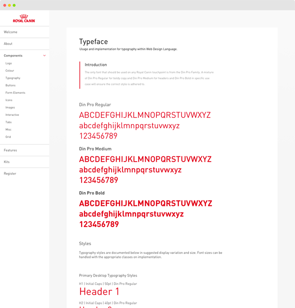

Royal Canin’s web design language is based on the principles of Atomic Design, a pioneering design approach authored by Brad Frost.
It’s intended audience is Web Design, User Experience and Front End Developer professionals. This portal is intentionally written as a practical, technical resource to enable those professionals to work more efficiently and connect, in the common pursuit of better brand experiences online.
This portal houses design comments, features and ‘UI Kits’ intended to provide clear guidance to professionals, both new and experience in working with the Royal Canin brand.
